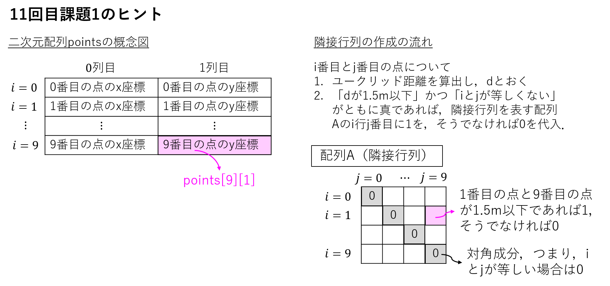

配列 (11回目 内容1)
配列 (11回目 内容1) 例題1（このような問題が解けるようになるのが目標，Karplus-Strongアルゴリズム）【覚えておこう！】 リダイレクト参考）例題1のプログラムの出力を音として聞くには：配列説明：説明：例題4（このような問題が解けるようになるのが目標， 簡単なビンゴゲームの作成）多次元配列多重ループ配列要素へのアクセスに関する概念図（例：5×5の二次元配列）内容1に関する課題（締切：7月02日（火）20:00）11回目課題１（ランダムに配置された複数点の近接性を表すグラフを構築）結果の例（乱数が入っているので実行の度に結果が変わる）11回目発展課題1（隣接行列を用いたグラフの可視化）
例題1（このような問題が解けるようになるのが目標，Karplus-Strongアルゴリズム）
ギターの音の簡単なモデルとして，次のようなものを提案されている．
十分大きい整数
で決める（だんだん，摩擦などによって滑らかになっていく，というイメージ．）
これに基づいて，ギターの音のシミュレーションをしてみたい．
xxxxxxxxxx//array1.c
int main(void){ int y ;//y の値を入れておくための配列を定義．大きさは44100とすること． int i; int ny; for(i=0;i<100;i++){ y[] = rand()%200;//最初の 100 個は乱数で決める． } for(;i<44100;i++){//1秒間分のギターの音のデータを作成する． y[] = (y[]+y[])/2; } for(i=0;i<44100;i++){ printf("%d\n", y[]); } return 0;}
【覚えておこう！】 リダイレクト
このプログラムを実行すると沢山の数字が出力されるが，シミュレーション結果を音として聞くためには，計算結果をファイルに保存する必要がある．そのためにリダイレクトという機能を使うと良い．
書き方１：
実行するプログラム名 > 出力ファイル名
例えば，
xxxxxxxxxx./a.out > data.txtとすると，./a.out を実行したときに画面上に出力される文字が，全て，data.txt というファイルの中に保存される
練習問題11-1-1
xxxxxxxxxx// redirect1.c
int main(void){ int i; for(i=0;i<10;i++){ printf("%d\n", i); } return 0;}上のプログラム redirect1.c をコンパイルし，実行結果を numbers.txt というファイルに保存してみよ．
（実行の仕方）
xxxxxxxxxx./a.out > numbers.txt 書き方２（出力だけでなく，入力のほうも同じような操作ができる）：
実行するプログラム名 < 入力ファイル名
例えば，
xxxxxxxxxx./a.out < data.txtのようにすると，./a.out を実行した後，data.txt の内容をキーボードで打ち込んだような動作をする．
練習問題11-1-2
redirect2.c が
xxxxxxxxxx// redirect2.c
int main(void){ int i; scanf("%d", &i); printf("%d\n", i); return 0;}で，redirect2.txt が
xxxxxxxxxx2のとき，
xxxxxxxxxxgcc redirect2.c./a.out < redirect2.txtとすると実行結果が以下のようになることを確認せよ．
xxxxxxxxxx2
参考）例題1のプログラムの出力を音として聞くには：
こちら を参照のこと．
配列
数学のベクトルのように，同じ型の変数を，複数，まとめて扱うと便利な場合がある．そのような場合に配列を使う．
文法（変数の宣言の仕方）
xxxxxxxxxx変数の型 変数名[変数の数];文法（変数の使い方）
xxxxxxxxxx変数名[番号] 沢山の箱のうち，何番目の箱にアクセスするかを「番号」を指定してきめる．
番号は0から （変数の数 -1 ）までの値になる．特に，0から始まることに注意．
文法（変数の初期化）
xxxxxxxxxx変数の型 変数名={0番目の値，1番目の値，...}
例1）下の変数 var は，int 型の箱を100個まとめたもの．要素が全て整数の，100次元のベクトルのようなもの．
xxxxxxxxxxint var[100]; // var[0] から var[99] までの100個の int 型の変数が作られる．var[10]=5; // 11番目の箱に 5 を入れる．説明：
int var[100];- この行のコードは、100個の整数を含む配列varを定義しています。var[0]からvar[99]までの100個のint型の変数が作成されます。var[10] = 5;- この行のコードは、配列の11番目の要素（配列のインデックスは0から始まるのでvar[10]は11番目の要素）に5を代入しています。
例2）小さい配列であれば，要素を全列挙して定義することもできる．
xxxxxxxxxxint var[2]={1,2};説明：
int var[2] = {1, 2};- この行のコードは、2個の整数を含む配列varを定義し、中括弧内の値を使用して配列の要素を初期化しています。var[0]は1に、var[1]は2に初期化されます。
例3）小さい配列であれば，要素を全列挙して定義することもできる．
xxxxxxxxxx
int main(void) { // 方法1：大きな配列を定義し、部分的に初期化 int largeArray[100]; largeArray[0] = 10; largeArray[1] = 20; // ... 他の要素の初期化 largeArray[99] = 1000; // 最後の要素を初期化 // 方法2：中括弧を使って小さな配列を初期化 int smallArray[3] = {1, 2, 3}; // 配列の要素を出力 printf("largeArray[0] = %d\n", largeArray[0]); printf("largeArray[99] = %d\n", largeArray[99]); printf("smallArray[0] = %d\n", smallArray[0]); printf("smallArray[2] = %d\n", smallArray[2]); return 0;}
例題2：大きさが10の int 型の配列 r に，0から99までの乱数を保存するプログラムを作成せよ．
（解答例）
xxxxxxxxxx//array2.cint r[10];int i;for(i=0;i<10;i++){ r[i]=rand()%100;}rand() 関数は 0 から RAND_MAX までの乱数を生成します。RAND_MAX の値は標準的な実装では通常 32767 です。
rand() % 100 はその乱数を 0 から 99 までの範囲に制限します。モジュロ演算 % を使用することで、特定の範囲内の乱数を得ることができます。
例題3：例題2で作成した配列rのうち，2の倍数（0, 2, 4, 6, 8）番目の要素を順番に格納した配列qを作成せよ（例題2のプログラムに加筆して作成せよ．）
（解答例）
xxxxxxxxxx//array3.cint r[10];int i;int q[5];int j = 0;for(i=0;i<10;i++){ r[i]=rand()%100; if (i % 2 == 0) { q[j] = r[i]; j++; } }
//内容を確認する場合はfor(j=0;j<5;j++){ printf("r[%d] = %d, q[%d] = %d\n", 2 * j, r[2 * j], j, q[j]);}
練習問題11-1-3 array2.c を書き換え，大きさが20の int 型の配列 r を作成し，最初の3つ（r[0], r[1], r[2]）に0から9までの乱数を保存するプログラムを作成せよ．
練習問題11-1-4 練習問題11-1-3で作成した配列 r の要素を初期値とする漸化式
の第20項目を求めよ．
ヒント：以下のプログラムを書き換えると良い．
xxxxxxxxxx//array4.c
int main(void){ // ここから下は array2.c の内容．練習問題1に合わせて書き換えてください． int r[10]; int i; for(i=0;i<10;i++){ r[i]=rand()%100; } // ここまで array2.c の内容 for(i=3;i<20;i++){ r[i] = (r[i-1]+ ) / ; } printf("%d\n",r[19]); // 番号は 0 から始まるので，r[19] が20番目． return 0;}
例題4（このような問題が解けるようになるのが目標， 簡単なビンゴゲームの作成）
2x2の用紙の各マスに，0から9までの数字を自由に入れる． （3x3以上の大きさでも構わないが，数字を沢山入力するのが面倒なので，2x2にしておく）
0から9までの数字を乱数で作成する． （プログラムを簡単にするために，同じ乱数が出ても良いものとする．）
もしも，出てきた乱数と同じ数字が用紙上にあった場合には，その場所にチェックを入れる．
チェックが縦，横のどちらかで揃っていれば終了．そうでなければ，次の乱数を作成する． （斜めもチェックしても良いが，プログラムを簡単にするために省略）

以下の書きかけのプログラムを完成させよ．
x
// bingo.c
int main(void){ int youshi[ ][ ]; // ビンゴゲームの用紙と youshi[][] の関係は下のようになっているとする． // ------------------------------- // | youshi[0][0] | youshi[0][1] | // ------------------------------- // | youshi[1][0] | youshi[1][1] | // ------------------------------- int check[2][2] = {{0,0},{0,0}}; // まだチェックされていないところは0にしておく．チェックされたら1にする． int suuji; int ransuu; int i, j, k;
do{//0と10の間の数字が入力されるまで繰り返す．同じ数字があったかどうかはチェックしない． printf("左上の数を入力してください\n"); scanf("%d", &suuji); }while(suuji>10 || suuji<0); youshi[0][0]=suuji;
do{//0と10の間の数字が入力されるまで繰り返す．同じ数字があったかどうかはチェックしない． printf("右上の数を入力してください\n"); scanf("%d", &suuji); }while(suuji>10 || suuji<0); youshi[ ][ ]=suuji;
do{//0と10の間の数字が入力されるまで繰り返す．同じ数字があったかどうかはチェックしない． printf("左下の数を入力してください\n"); scanf("%d", &suuji); }while(suuji>10 || suuji<0); youshi[ ][ ]=suuji;
do{//0と10の間の数字が入力されるまで繰り返す．同じ数字があったかどうかはチェックしない． printf("右下の数を入力してください\n"); scanf("%d", &suuji); }while(suuji>10 || suuji<0); youshi[ ][ ]=suuji;
for(i=0;i<2;i++){ for(j=0;j<2;j++){ printf("youshi[%d][%d]=%d\n", i,j,youshi[i][j]); } }
i = 0; while(1){//ゲームが終わるまで繰り返す． ransuu = rand()%10;//これまで出たものと同じ乱数が出ても気にしないことにする． printf("%d の番号が出ました\n", ransuu); for(j=0;j<2;j++){ for(k=0;k<2;k++){ if(youshi[ ][ ]==ransuu){ check[ ][ ]=1; } printf("check[%d][%d]:%d\n", j,k,check[j][k]); } } if(check[0][0]+check[0][1]==2){ printf("上の行が揃いました \n"); // ループを終了して次の処理に移る． } if(check[1][0]+check[1][1]==2){ printf("下の行が揃いました \n"); // ループを終了して次の処理に移る． } if(check[0][0]+check[1][0]==2){ printf("左の列が揃いました \n"); // ループを終了して次の処理に移る． } if(check[0][1]+check[1][1]==2){ printf("左の列が揃いました \n"); // ループを終了して次の処理に移る． } i=i+1; }
return 0;}
多次元配列
配列は，変数の箱を1列に並べたようなものであったが，場合によっては，行列のように，2次元的にデータを並べたい場合もある．多次元的にデータを並べたい場合には，下のプログラムの例のように，添え字を沢山つけておけば良い．
xxxxxxxxxxint a[10][20]; // 10 x 20 の領域に箱を2次元的に並べたもの（行列のようなもの）int b[10][20][30]; // 10 x 20 x 30 の領域に箱を3次元的に並べたもの多重ループ
また，このような配列を扱う（例えば，配列に数字を入れる）ためには，配列の各添え字について繰り返し処理を行えると便利である．そのような処理は，for 文などの繰り返し処理の中で，さらに繰り返し処理を行えば良い．
例）
xxxxxxxxxx//array5.c
int main(void){ int a[10][10]; int i,j; for(i=0;i<10;i++){ for(j=0;j<10;j++){ a[i][j] = i+j; } }
for(i=0;i<10;i++){ for(j=0;j<10;j++){ printf("%d\n", a[i][j]); } }
return 0;}配列要素へのアクセスに関する概念図（例：5×5の二次元配列）

※ データが少なければ，全列挙して初期化することも出来る．
xxxxxxxxxx// array6.c
int main(void){ int a[3][3]={{1, 2, 3}, {4, 5, 6}, {7, 8, 9}}; int i,j; for(i=0;i<3;i++){ for(j=0;j<3;j++){ printf("a[%d][%d]=%d \n", i, j, a[i][j]); } }
return 0;}
内容1に関する課題（締切：7月02日（火）20:00）
11回目課題１（ランダムに配置された複数点の近接性を表すグラフを構築）
5m×5mの2次元領域に，10個の点をランダムに配置する．ここで，これらの点をグラフの頂点（ノード）とみなし，二点が十分に近ければ，その間に辺（エッジ）を引くことを考える．グラフに関する用語については，下図を参照せよ（数学的に厳密な説明については，他の授業で習うかもしれません．）

以下の手順に従い，下記のプログラムを完成させよ．これにより，ランダムに配置した点の座標と，得られるグラフの隣接行列を，printfで表示させよ．
10個の点の2次元座標を格納した，2次元配列を作成せよ．ただし，
任意の2点のユークリッド距離が1.5m以下であれば近いと判断し，無向グラフを構築せよ．具体的には，上図にならって，0または1を要素とする隣接行列を構築せよ．
注意
math.hをインクルードしているので，コンパイル時には
gcc ファイル名 -lmのように「-lm」というオプションを追加せよ．また，変数xの平方根を求める時には
#include <math.h>をして，sqrt(x)を用いよ．xの二乗を求める時には，pow(x)とすればよい（x*xでも良い．）
提出要領
完成したソースファイルに
kadai11_1_学籍番号.cと名前を付けて保存し，BEEF plusの「11回目課題1提出」へ提出せよ．
xxxxxxxxxx//kadai11_1.c
calcDistance(int x1, int y1, int x2, int y2) { double distance = ; return distance;}
int main() { int N = 10; //点の数 int points[N][ ]; // 座標を格納する二次元配列 int A[N][N]; // 隣接行列を表す二次元配列 double d; // 2点間距離を格納する変数
// ランダムに座標を生成 for (int i = 0; ; ) { points[i][0] = ; // x座標 (0 ~ 5) points[i][1] = ; // y座標 (0 ~ 5) }
// 生成した座標を出力 printf("Generated coordinates:\n"); for (int i = 0; i < N; i++) { printf("Point %d: (%d, %d)\n", i+1, points[i][0], points[i][1]); }
// 隣接行列の作成 for (int i = 0; i < N; i++) { for (int j = 0; j < N; j++) { double d = calcDistance(points[i][0], points[i][1], points[j][0], points[j][1]); if (() && (i != j)){ }else{ } } }
// 隣接行列の表示 printf("\nAdjacency Matrix:\n"); for (int i = 0; ; ) { for (int j = 0; ; ) { printf("%d ", A[i][j]); } printf("\n"); }
// (以下はオプション課題で利用，修正不要) 隣接行列をテキストファイルに出力 FILE* file = fopen("A.txt", "w"); if (file != NULL) { for (int i = 0; i < N; i++) { for (int j = 0; j < N; j++) { fprintf(file, "%d ", A[i][j]); } fprintf(file, "\n"); } fclose(file); } return 0;}
結果の例（乱数が入っているので実行の度に結果が変わる）
xxxxxxxxxxGenerated coordinates:Point 1: (3, 1)Point 2: (2, 0)Point 3: (3, 0)Point 4: (1, 2)Point 5: (4, 1)Point 6: (2, 2)
Adjacency Matrix:0 1 1 0 1 1 1 0 1 0 0 0 1 1 0 0 1 0 0 0 0 0 0 1 1 0 1 0 0 0 1 0 0 1 0 0

11回目発展課題1（隣接行列を用いたグラフの可視化）
11回目課題1で完成したプログラムを実行すると，隣接行列を格納したテキストファイルkadai11_1.txtが出力される．
これを読み込み，グラフを可視化する最下部のpythonのプログラム（visgraph_matrix.py）を最下部に掲載している．
これをkadai11_1.txtと同じディレクトリに配置し，実行することで，グラフを描画せよ．
pythonプログラムの実行時には，ターミナルに
xxxxxxxxxxpython visgraph_matrix.py *******と入力せよ．このとき，アスタリスクは学籍番号（数字7桁）に置換せよ ．
提出要領（本課題への解答は必須ではない．加点要素である．）
pythonプログラムを実行すると，kadai11_1_学籍番号.pngという画像が出力される．これを，BEEF plusの「11回目課題1提出」より提出せよ．
以下は，グラフ可視化用のpythonコード：
xxxxxxxxxx#!/usr/bin/env python# -*- coding: utf-8 -*-
# visgraph_matrix.pyimport numpy as npimport networkx as nximport matplotlib.pyplot as pltimport sys
args = sys.argvgakuban = args[1] #gakubanfigname = 'kadai11_1'# 隣接行列の読み込みadjacency_matrix = np.loadtxt(figname+'.txt', dtype=int)
# グラフの作成G = nx.Graph(adjacency_matrix)
# グラフの描画pos = nx.spring_layout(G, seed=42) nx.draw_networkx_nodes(G, pos, node_size=500, node_color='lightblue') nx.draw_networkx_edges(G, pos) # エッジの描画nx.draw_networkx_labels(G, pos, font_size=10, font_color='black') plt.axis('off') plt.title(str(gakuban)) plt.savefig(figname+'_'+str(gakuban)+'.png') plt.show()